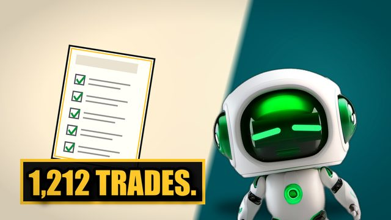

A free one-pager from the channel that tests money promises the way a trading desk would — real data, real costs, and the verdict written down before the results.
Send me the 7 Questions →The reports are the receipts. The episodes are the story — the pitch given its full voice, the machine built on screen, and the verdict landing with its numbers attached. New episode with every report.
▶ Watch on YouTube
ON THE CHANNELTwenty-four income ETFs, 21 of them priced against their own underlying over their whole life, on survivorship-free month-end records through 2026-06-30, every cell re-derived (96 of 96 master cells, 21 of 21 cap-cost cells, 0 diffs). JEPI, the $44.3B fund that defines the category, paid 8.8% a year and gave up 7.9 points a year to SPY — within a point of each other, two measurements and no mechanism — so a dollar became $1.83 against $2.67 over the same 6.1 years. The cheapest call-writers cost 2.2–2.8 points; GPIX gave up 3.3 and grew NAV 13.8% a year; QYLD over 12.5 years became $1.76 against $9.26. The wild end ships as dollars, not rates, because our own “CAGR” column is an annualized arithmetic mean — and on the compounding ruler MSTY beat its own stock, which we found only after correcting an extra index month on every pair. 17 of 24 funds have never seen a bear. Three scars on our own instrument, all 24 rows, no specimen’s figures, and the three things that would change our mind.
A Canadian income-ETF educator holds his fund because his yield on cost is 22.6% against a 15.1% market yield. We rendered yield on cost month by month on two US funds we measured from a survivorship-free store: on SCHD the two lines separate by exactly the ×3.34 the price moved, on ULTY by the ×0.35 it collapsed, and on one day SCHD wears 166 different yields on cost, 2.45% to 8.42%, against one market yield of 2.49%. His own two figures, divided, hand back the ~50% price gain he states separately — his numbers, our arithmetic. Then the question the metric skips: a dollar in SCHD became $5.95 over its 14.7-year life against $7.68 in SPY, and $3.76 on price alone — real compounding, behind the index. Nothing about his Canadian fund is measured by us; the on-jurisdiction evidence is Ben Felix’s, credited by name. The git-witnessed pre-registration, all 184 rows, and the three things that would change our mind.
We read our own pre-registrations back against our own results: 14 lab directories, 13 registrations, about 143 registered items, 27 of them hand-scored with a line reference on both sides. Every registered lab carries a priors block, and 20 of 27 hand-scored priors hit — inside the 65–85% band we registered before counting. That is the easy half. At least 9 registered items across 6 labs were never scored by the results that were supposed to score them; one lab registered 25 items and published no results at all; another published results with no registration. Our own direction prediction for this very ledger was written too loosely to say which rows it meant, so it scored 62.5% one way and 35.3% the other, and we publish both. There is no defendant here but us. The dated pre-registration (not hash-locked, and we say why), all 27 rows, and the six envelopes with their commit timestamps read from git.
A viewer on our first Qullamaggie episode said the breakout only works in strong markets and hot sectors, and that we had skipped that filter. He was half right about us. So we froze the first episode’s mechanics, pre-registered five gates, built the filter as he states it on his own nightly scans, and ran it on every US stock that met his floor from 2019, delisted names included: 783 breakouts in, 78 out, and the profit factor fell at every rung (0.87 → 0.84 → 0.70 → 0.55). Both halves lose, the three best names were the only thing holding it up, no dial setting reached break-even, and the 2010–2015 holdout, run once, agrees. The verdict is a pair: the mechanics are real; the rule, without his judgment, is not an edge. Every trade of every cell is in the ledger.
We already had 244,328 day-trading trades on the record from a strategy we published as a kill: -0.2065 R a trade. We sorted the file from best to worst and cut the top ten into a highlight reel: ten trades, ten winners, every one of them real. Behind them, 244,318 trades a viewer never sees — about 24,433 for every screenshot. The same cut on a second, net-positive population makes the same reel. Twenty registered cells (five reel sizes, two populations, two arms), every one published whether or not it flatters the concept, and the ledger so you can re-derive each headline yourself.
An AI agent wrote our own leverage backtest — and committed the pre-registration first: one file, 83 lines, nothing else, 7 minutes and 4 seconds before the commit that carried the engine. One bar in it was about the instrument rather than the answer: realized beta had to land inside [1.1, 1.5]. The run printed a flattering verdict and, in the same statement, the beta that disqualified it. One line was sizing the position in unit counts instead of dollars. Fixed and re-run, the verdict inverted. The buggy run was never committed, so every figure from it here is a labelled reconstruction. The locked pre-registration, all 13 entries, the machine-produced diff — and the three things this does not claim, starting with the second defect that night that no bar caught.
Two pre-registrations, run against the days his own rule names. The version that sorts by company size did not survive. The version that sorts by year did: in 2021 the stocks that crossed his line closed lower 20.7 percentage points more often than the same stocks on the days they did not. By 2023, at his own number, that gap is 5.3. He disclosed the decay himself, and he was right. What we still cannot measure is whether any of it was ever borrowable — that is the open bounty.
We audited our own review process for three weeks: 26 rounds, 212 blind lens-runs across 9 episodes, zero approvals. The defendant here is a structure, not a person — one agent sitting in every chair. The number that should worry you is not the zero; it is how many of our own published episodes never entered a doctor round at all.
The same 1.33x exposure held two ways for six years — a margin loan against long-dated calls — with both sides charged honestly: bought at the ask, marked at the bid daily, commission both ways. The options cost about 1.4 points a year more, and over the whole window the margin book was never called and never close. All 13 entries, the locked pre-registration, and the rate sensitivity we registered and had not run until now.
One momentum strategy run twice over 21.7 years, changing only whether the universe still contained the companies that died. Deleting the dead flattered it at 4 of 4 basket widths — +1.16 to +2.49 CAGR points a year — but on a leveraged version of the same strategy the bias ran backwards. The dated pre-registration (not hash-locked, and we say why), all 8 cells of the grid, and the two predictions we got wrong.
His free five-step entry checklist, coded exactly as written and run on 1,212 trades across 22 years: it loses before a single cent of cost, winning 31.3% against the 33.3% its own 2R target needs. The locked pre-registration, the complete trade-by-trade ledger, and what would change our mind.
A faithful clone of the published rules, priced on survivorship-free data with real costs: 0-for-12 on the setups the rules call textbook. The full ledger, the exclusions, and the reopen bounty.
A report goes up when its episode ships — in practice just before it, so the video does not point at a page that is not there yet — and an episode is not listed here until the report behind it is. Subscribe to get each one as it lands.
Plus our full test reports — every number, the pre-registration, and what would change our mind.
Send me the 7 Questions →